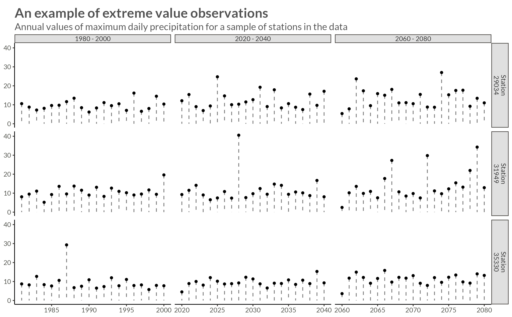
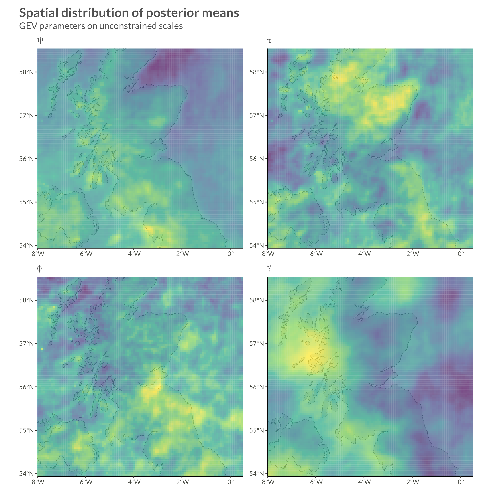

Code
library(bggjphd)
library(tidyverse)
library(glue)
library(here)
library(gt)
library(skimr)
library(arrow)
library(leafsync)
library(sf)
library(mapview)
theme_set(theme_bggj())Note: I’m still working on this post, but I thought I might put it out there while I work on it.
library(bggjphd)
library(tidyverse)
library(glue)
library(here)
library(gt)
library(skimr)
library(arrow)
library(leafsync)
library(sf)
library(mapview)
theme_set(theme_bggj())My PhD research is mostly about three things:
In this post I will write a little about the first two.
Up until now I have mostly been working with the generalized extreme value distribution. The cumulative distribution function of the Generalized Extreme Value distribution is
\[ \mathrm{GEV}(y \vert \mu, \sigma, \xi) = \begin{cases} \begin{aligned} &e^{- \left(1 + \xi \frac{y - \mu}{\sigma}\right)_+^{-1/\xi}}, \quad &\xi \neq 0 \\ &e^{-e^{- \frac{y - \mu}{\sigma}}}, \qquad &\xi = 0 \end{aligned} \end{cases} \]
The log-likelihood of the GEV distribution is
\[ \ell(\mu, \sigma, \xi) = - n\log\sigma - (1 + \frac{1}{\xi}) \sum_{i=1}^{n}{\log\left(1 + \xi\left[\frac{z_i - \mu}{\sigma} \right]\right)} - \sum_{i=1}^{n}{\left(1 + \xi \left[ \frac{z_i - \mu}{\sigma} \right]\right)}^{-1/\xi}, \]
provided that \(1 + \xi\left( \frac{z_i - \mu}{\sigma} \right) > 0\). Instead of \(\mu\) I will be using the parameter \(\mu_t\) where
\[ \mu_t = \mu_0 \cdot (1 + \Delta(t - t_0)) = \mu_0 + \Delta(t - t_0) \cdot \mu_0. \]
We thus estimate two parameters that are related to the location of the GEV distribution, \(\mu_0\) and \(\Delta\).
In our formulation, the GEV distribution has four parameters:
You could also just say that there are three parameters and that we’re using a linear model to allow a trend in the location parameter, but we’ll keep this wording for now.
I will be fitting a GEV distribution to each area in the CEDA Archived data I’ve written about before. It’s logical to assume that these areas are not completely independent and that there is some sort of spatial dependency, i.e. that all other things being equal; areas that are near each other are more similar that areas that are far away from each other.
We could apply a model structure based on the distance between points, but we will end up having a lot of areas (around 40,000 or so), so we need a spatial model that allows for sparsity in the spatial dependence.
One way to do this is to model the areas as jointly multivariate normal distributed with a sparse precision matrix. Precision matrices can be better than covariance matrices for this type of modeling since the off-diagonal elements in a precision matrix stand for conditional dependencies.
More formally, let \(\mathbf x\) be multivariate normal distributed with mean \(\boldsymbol \mu\) and semi positive definite precision matrix \(\mathbf Q\). Then for \(i \neq j\)
\[ x_i \perp x_j \vert \mathbf x_{-ij} \iff Q_{ij} = 0. \]
This means that any two elements in \(\mathbf x\) are conditionally independent conditional on the other elements of \(\mathbf x\) if and only if the corresponding value in the precision matrix \(\mathbf Q\) is zero. For further reading see Rue and Held (2005).
We can easily use this to our advantage so that our precision matrix becomes very sparse. For example we might set \(Q_{ij} \neq 0\) only if \(i\) and \(j\) are neighbors on our map.
The rest of this chapter on spatial statistics is based heavily on the paper by Morris et al. (2019).
In a CAR prior, the prior distribution of \(x_i\) given its neighbors can be written
\[ x_i \vert x_{-i} \sim \mathrm{Normal}\left( \sum_{j\in S_i} w_{ij}x_j, \sigma^2 \right), \]
where \(x_{-i}\) means every element of \(x\) except for \(x_i\), \(S_i\) is the set of neighbors of \(x_i\), and \(w_{ij}\) are weights.
This can be written as a multivariate normal variate with mean 0 and a precision matrix, \(\mathbf Q\), which is defined as
\[ Q = D(I - \alpha A). \]
Here, D is a diagonal matrix with \(D_{ii} = d_i\) being equal to the number of neighbors of \(x_i\), \(A\) is the adjacency matrix
\[ A_{ij} = 1 \iff x_j \in S_i, \]
\(I\) is the identity matrix, and \(0 < \alpha < 1\) is a parameter that encodes the amount of spatial dependence. If \(\alpha = 0\) then there is no spatial dependence and if \(\alpha = 1\) we get what is called an ICAR model.
In an ICAR model the spatial dependence parameter \(\alpha = 1\) and so, the precision matrix, \(Q\), is singular since then
\[ Q = D(I - A). \]
Recall that \(D_{ii} = d_i\) is equal to the number of neighbors of \(x_i\) and so the diagonal of \(Q\) will be equal to the sum of its off-diagonal elements. This can still be used as a prior, but we must take care since it is an improper prior.
The conditional distribution of \(x_i\) given all other observations is
\[ x_i \vert x_{-i} \sim \mathrm{Normal}\left( \frac{ \sum_{j\in S_i}{x_j}}{d_i}, \frac{\sigma_i^2}{d_i}\right). \]
If we specify that \(x\) as mean 0 and variance 1, then the joint distribution of \(x\) becomes
\[ x \sim \exp\left(-\frac12 \sum_{j\in S_i}{(x_i - x_j)^2}\right). \]
We can easily see that this is not proper, since any constant added to all of the \(x_i\)’s will give the same density. One way around this issue is to add the constraint \(\sum x_i = 0\).
The BYM model is composed of two different types of random effects:
Here, both \(\phi\) and \(\theta\) are assumed to follow normal distributions with means 0 and precision parameters \(\tau_\phi\) and \(\tau_\theta\). We can see that if \(\tau_\phi\) is estimated to be much higher than \(\tau_\theta\) then our data is implying more spatial than non-spatial dependence (and vice versa).
One difficulty in using this model is that apriori we want “fair” hyperpriors for the precision parameters, i.e. we do not want our prior to weight our model in the direction of more or less spatial dependence. One way to choose these priors is the formula from (L, D, and C 1995):
\[ sd(\theta_i) = \frac{1}{\sqrt{\tau_\phi}} \approx \frac{1}{0.7\sqrt{\bar m \tau_\theta}} \approx sd(\phi_i), \]
where \(\bar m\) is the average number of neighbors for each \(x_i\).
The BYM2 model (Riebler et al. 2016) rewrites the hyperpriors from the BYM model in a way that follows the Penalized Complexity Priors framework (Simpson et al. 2015). The prior is rewritten so that a single scale parameter, \(\sigma\), determines the variance of both components, and a mixing parameter, \(\rho\), determines the amount of spatial/non-spatial random effect.
The combined effects, \(\phi + \theta\), are thus rewritten as
\[ \sigma \cdot \left( \sqrt{\rho} \cdot \frac{\phi^*}{\sqrt s} + \sqrt{1 - \rho} \cdot\theta^* \right), \] where \(0 \leq \rho \leq 1\) determines the amount of spatial/non-spatial error, \(\phi^*\) is the ICAR model, \(\theta^*\) is an iid random effect, \(s\) is the scaling factor for the neighborhood graph, \(\sigma \geq 0\) is the overall standard deviation of the combined random effects.
Even if we use the aforementioned models to allow spatial dependence between the paremeters in our GEV distributions, there is still one problem: We’re not modeling spatial distributions on the data level.
This means that our model as it is currently set up can allow spatial dependence in how often extreme precipitation happens in neighboring regions, but it does not allow for spatial dependence in when we observe extreme precipitation. To do this, we will need to apply copulas. I will not write about them here, but I have a post on the way about applying copulas to data with GEV margins.
The data used in this research are downloaded from the CEDA Archive:
The raw data contain climate projections for the UK on a 5km grid from 1980 to 2080 for a high emissions scenario, RCP8.5, and contain hourly precipitation rates of \(43.920\) squares on a \(180 \times 244\) grid. The projections are calculated for \(1980 - 2000\), \(2020 - 2040\), and \(2060 - 2080\), thus giving \(60 \times 365 \times 24 \times 180 \times 244 \approx 2.3 \cdot 10^{10}\) data points.
The raw data were processed by calculating the yearly maximum over the hourly precipitation rates for each station, thus reducing the number of data points to \(60 \times 180 \times 244 \approx 2.6 \cdot 10^6\).
For a description of how to download the data, see my post on Fetching FTP data from the Ceda Archives.
For this analysis, I will be subsetting the data to save time. I’m going to use 10.201 stations with X projections between 50 and 150, and Y projections between 100 and 200.
To be able to index the stations in my Stan program, I give the stations new names according to their row number. In the filtered dataset.
model_stations <- stations |>
filter(
between(proj_x, 50, 150),
between(proj_y, 100, 200)
)
new_names <- model_stations |>
mutate(new_name = row_number()) |>
distinct(station, new_name)
model_stations |>
skim()model_precip <- precip |>
semi_join(
model_stations,
by = join_by(station)
)
model_precip |>
skim()p <- model_precip |>
filter(
station %in% sample(station, size = 3)
) |>
mutate(
period = 1 + (year >= 2020) + (year >= 2060),
period = c("1980 - 2000", "2020 - 2040", "2060 - 2080")[period],
station = str_c("Station\n", station)
) |>
ggplot(aes(year, precip)) +
geom_point() +
geom_segment(
aes(
yend = 0, xend = year
),
lty = 2,
alpha = 0.5,
linewidth = 0.6
) +
facet_grid(
cols = vars(period),
rows = vars(station),
scales = "free_x"
) +
labs(
x = NULL,
y = NULL,
title = "An example of extreme value observations",
subtitle = "Annual values of maximum daily precipitation for a sample of stations in the data"
)
ggsave(
plot = p,
filename = "Figures/ts_extreme_plot.png",
width = 8, height = 0.621 * 8, scale = 1.3
)
precip_matrix <- model_precip |>
pivot_wider(names_from = station, values_from = precip) |>
column_to_rownames("year") |>
as.matrix()
N_stations <- ncol(precip_matrix)
N_years <- nrow(precip_matrix)edges <- twelve_neighbors |>
filter(
type %in% c("e", "n", "w", "s")
) |>
inner_join(
model_stations,
by = join_by(station)
) |>
semi_join(
model_stations,
by = join_by(neighbor == station)
) |>
select(station, neighbor) |>
update_names(station) |>
update_names(neighbor)
N_neighbors = nrow(edges)
node1 <- edges$station
node2 <- edges$neighbornbs <- edges |>
filter(neighbor > station) |>
rename(node1 = station, node2 = neighbor)
N <- nrow(model_stations)
adj.matrix <- sparseMatrix(i = nbs$node1, j = nbs$node2, x = 1, symmetric = TRUE)
# The ICAR precision matrix (note! This is singular)
Q <- Diagonal(N, rowSums(adj.matrix)) - adj.matrix
# Add a small jitter to the diagonal for numerical stability (optional but recommended)
Q_pert <- Q + Diagonal(N) * max(diag(Q)) * sqrt(.Machine$double.eps)
# Compute the diagonal elements of the covariance matrix subject to the
# constraint that the entries of the ICAR sum to zero.
# See the inla.qinv function help for further details.
Q_inv <- inla.qinv(Q_pert, constr = list(A = matrix(1, 1, N), e = 0))
# Compute the geometric mean of the variances, which are on the diagonal of Q.inv
scaling_factor <- exp(mean(log(diag(Q_inv))))stan_data <- list(
N_stations = N_stations,
N_years = N_years,
precip = precip_matrix,
N_neighbors = N_neighbors,
node1 = node1,
node2 = node2,
scaling_factor = scaling_factor
)The model is written below in mathematical notation and Stan code.
\[ \begin{gathered} y_{it} \sim \mathrm{GEV}(\mu_{it}, \sigma_i, \xi_i) \\ \mu_{it} = \mu_i^0 \cdot(1 + \Delta_i (t - t_0)) \\ \begin{pmatrix} \psi_i \\ \tau_i \\ \phi_i \\ \gamma_i \end{pmatrix} = \begin{pmatrix} \log(\mu_{i}^0) \\ \log(\sigma_i) - \psi_i \\ f_\phi(\xi) \\ f_\gamma(\Delta) \end{pmatrix} \\ \psi \sim \mathrm{Normal}(\mu_\psi, \Sigma_\psi^*) \quad \Sigma_\psi^* \sim \mathrm{BYM2}_\psi(\sigma_\psi, \rho_\psi) \\ \tau \sim \mathrm{Normal}(\mu_\tau, \Sigma^*_\tau) \quad \Sigma^*_\tau \sim \mathrm{BYM2}_\tau(\sigma_\tau, \rho_\tau) \\ \phi \sim \mathrm{Normal}(\mu_\phi, \Sigma^*_\phi) \quad \Sigma^*_\phi \sim \mathrm{BYM2}_\phi(\sigma_\phi, \rho_\phi) \\ \gamma \sim \mathrm{Normal}(\mu_\gamma, \Sigma^*_\gamma) \quad \Sigma^*_\gamma \sim \mathrm{BYM2}_\gamma(\sigma_\gamma, \rho_\gamma) \\ \sigma_\psi, \sigma_\tau, \sigma_\phi, \sigma_\gamma \sim \mathrm{Exponential}(1) \\ \mathrm{logit}(\rho_\phi), \dots, \mathrm{logit(\rho_\gamma)} \sim \mathrm{Normal}(0, 1) \end{gathered} \]
functions{
/*
Fit a GEV distribution with trend
*/
real gevt_lpdf(vector y, real mu0, real sigma, real xi, real delta) {
int N = rows(y);
vector[N] z;
vector[N] mu;
real lp = 0;
for (i in 1:N) {
mu[i] = mu0 * (1 + delta * (i - 1));
if (z[i] <= -1) {
reject("found incompatible variable values");
}
if (abs(xi) < 1e-12) {
z[i] = (y[i] - mu[i]) / sigma;
lp += - z[i] - exp(-z[i]);
} else {
z[i] = xi * (y[i] - mu[i]) / sigma;
lp += - (1 + 1 / xi) * log(1 + z[i]) - pow((1 + z[i]), -1/xi);
}
}
lp += -N * log(sigma);
return lp;
}
/*
Put an ICAR prior on coefficients
*/
real icar_normal_lpdf(vector phi, int N, array[] int node1, array[] int node2) {
return - 0.5 * dot_self((phi[node1] - phi[node2]))
+ normal_lpdf(sum(phi) | 0, 0.001 * N);
}
}
data {
int<lower = 0> N_years;
int<lower = 0> N_stations;
matrix[N_years, N_stations] precip;
int<lower = 0> N_neighbors;
array[N_neighbors] int node1;
array[N_neighbors] int node2;
real<lower = 0> scaling_factor;
}
parameters {
vector[N_stations] psi_random;
vector[N_stations] psi_spatial;
real<lower = 0> sigma_psi;
real mu_psi;
real logit_rho_psi;
vector[N_stations] tau_random;
vector[N_stations] tau_spatial;
real<lower = 0> sigma_tau;
real mu_tau;
real logit_rho_tau;
vector[N_stations] phi_random;
vector[N_stations] phi_spatial;
real<lower = 0> sigma_phi;
real mu_phi;
real logit_rho_phi;
vector[N_stations] gamma_random;
vector[N_stations] gamma_spatial;
real<lower = 0> sigma_gamma;
real mu_gamma;
real logit_rho_gamma;
}
transformed parameters {
real<lower = 0, upper = 1> rho_psi = inv_logit(logit_rho_psi);
real<lower = 0, upper = 1> rho_tau = inv_logit(logit_rho_tau);
real<lower = 0, upper = 1> rho_phi = inv_logit(logit_rho_phi);
real<lower = 0, upper = 1> rho_gamma = inv_logit(logit_rho_gamma);
vector[N_stations] psi = mu_psi + sigma_psi * (sqrt(rho_psi / scaling_factor) * psi_spatial + sqrt(1 - rho_psi) * psi_random);
vector[N_stations] tau = mu_tau + sigma_tau * (sqrt(rho_tau / scaling_factor) * tau_spatial + sqrt(1 - rho_tau) * tau_random);
vector[N_stations] phi = mu_phi + sigma_phi * (sqrt(rho_phi / scaling_factor) * phi_spatial + sqrt(1 - rho_phi) * phi_random);
vector[N_stations] gamma = mu_gamma + sigma_gamma * (sqrt(rho_gamma / scaling_factor) * gamma_spatial + sqrt(1 - rho_gamma) * gamma_random);
vector<lower = 0>[N_stations] mu0 = exp(psi);
vector<lower = 0>[N_stations] sigma = exp(psi + tau);
vector<lower = -0.5, upper = 0.5>[N_stations] xi = inv_logit(phi) - 0.5;
vector<lower = -0.01, upper = 0.01>[N_stations] delta = 0.02 * inv_logit(gamma) - 0.01;
}
model {
for (i in 1:N_stations) {
precip[ , i] ~ gevt(mu0[i], sigma[i], xi[i], delta[i]);
}
psi_spatial ~ icar_normal(N_neighbors, node1, node2);
psi_random ~ std_normal();
sigma_psi ~ exponential(1);
logit_rho_psi ~ std_normal();
mu_psi ~ normal(2.2, 1);
tau_spatial ~ icar_normal(N_neighbors, node1, node2);
tau_random ~ std_normal();
sigma_tau ~ exponential(1);
logit_rho_tau ~ std_normal();
mu_tau ~ normal(-0.9, 1);
phi_spatial ~ icar_normal(N_neighbors, node1, node2);
phi_random ~ std_normal();
sigma_phi ~ exponential(1);
logit_rho_phi ~ std_normal();
mu_phi ~ normal(0, 1);
gamma_spatial ~ icar_normal(N_neighbors, node1, node2);
gamma_random ~ std_normal();
sigma_gamma ~ exponential(1);
logit_rho_gamma ~ std_normal();
mu_gamma ~ normal(0, 1);
}model <- cmdstan_model(
here("posts", "icar_gev", "Stan", "BYM_GEV_LOGIT.stan")
)
fit <- model$sample(
data = stan_data,
chains = 4,
parallel_chains = 4,
iter_warmup = 1000,
iter_sampling = 1000,
save_warmup = FALSE,
refresh = 10,
output_dir = here("posts", "icar_gev", "Stan", "Draws")
)I won’t show convergence analytics here, but after doing our due diligence we can move on to looking at parameter estimates.
here("posts", "icar_gev", "results", "bym_results.csv") |>
read_csv() |>
mutate(
variable = str_c("<b>&", variable, ";</sub></b>") |>
str_replace("_", ";<sub>&")
) |>
gt() |>
tab_header(
title = "Our BYM2 hyperparameters point to a large degree of spatial variation"
) |>
fmt_markdown(
columns = variable
) |>
fmt_number(
columns = mean:rhat,
decimals = 3
) |>
fmt_number(
columns = ess_bulk:ess_tail,
decimals = 0
) |>
tab_options(table.width = pct(100))| Our BYM2 hyperparameters point to a large degree of spatial variation | |||||||||
|---|---|---|---|---|---|---|---|---|---|
| variable | mean | median | sd | mad | q5 | q95 | rhat | ess_bulk | ess_tail |
σψ |
0.072 | 0.072 | 0.001 | 0.001 | 0.070 | 0.074 | 1.012 | 137 | 387 |
μψ |
2.133 | 2.133 | 0.001 | 0.001 | 2.131 | 2.135 | 1.001 | 5,029 | 3,417 |
ρψ |
0.998 | 0.998 | 0.001 | 0.001 | 0.997 | 0.999 | 1.000 | 3,161 | 3,218 |
στ |
0.102 | 0.102 | 0.002 | 0.002 | 0.098 | 0.106 | 1.015 | 381 | 973 |
μτ |
−0.923 | −0.923 | 0.001 | 0.001 | −0.926 | −0.921 | 1.000 | 4,130 | 3,507 |
ρτ |
0.997 | 0.998 | 0.001 | 0.001 | 0.996 | 0.999 | 1.001 | 3,192 | 2,903 |
σφ |
0.358 | 0.358 | 0.009 | 0.009 | 0.343 | 0.372 | 1.008 | 401 | 730 |
μφ |
0.341 | 0.341 | 0.004 | 0.004 | 0.335 | 0.347 | 1.001 | 3,728 | 3,049 |
ρφ |
0.996 | 0.997 | 0.001 | 0.001 | 0.994 | 0.998 | 1.002 | 1,995 | 2,677 |
σγ |
0.332 | 0.333 | 0.011 | 0.011 | 0.313 | 0.351 | 1.029 | 105 | 208 |
μγ |
1.438 | 1.438 | 0.012 | 0.012 | 1.419 | 1.458 | 1.001 | 2,517 | 3,053 |
ργ |
0.996 | 0.996 | 0.002 | 0.001 | 0.993 | 0.998 | 1.000 | 3,823 | 2,875 |
